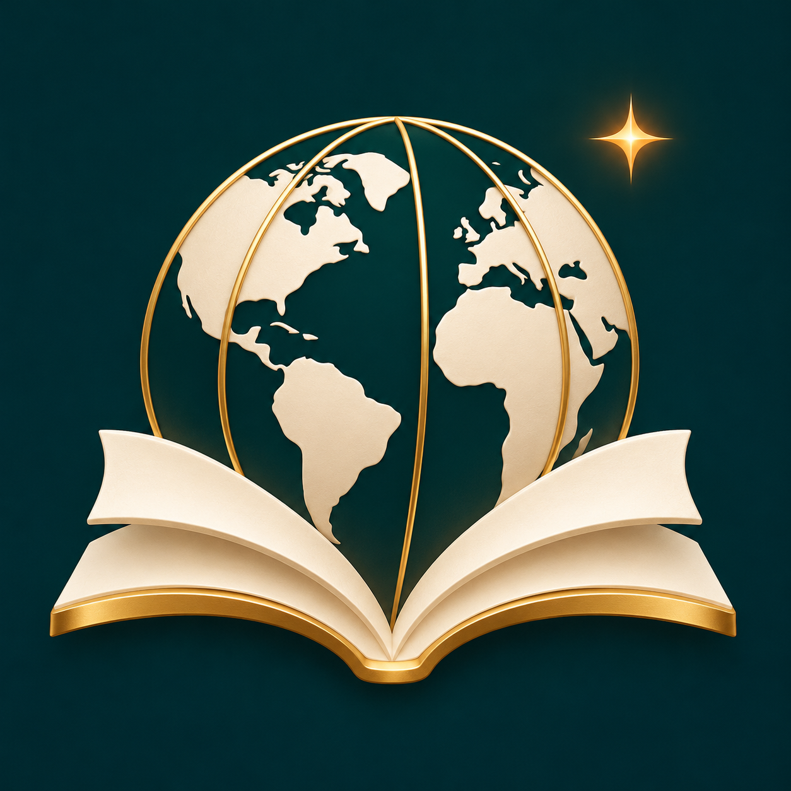
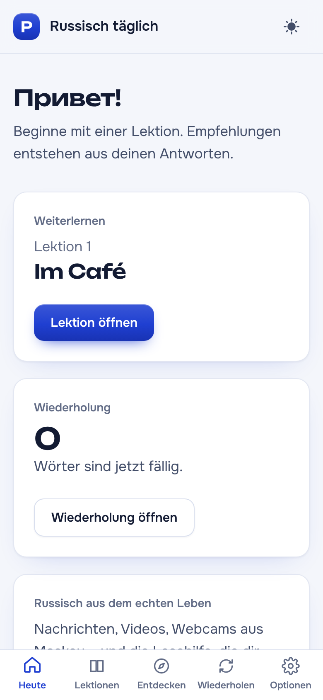
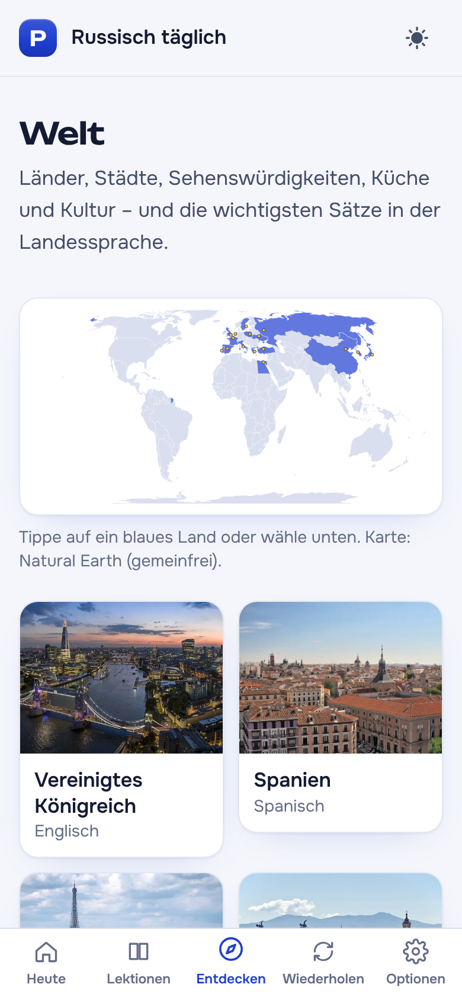

Ein Gespräch als Anfang.
Kurze Dialoge bringen dich direkt in den Alltag. Mit deutscher Übersetzung und optionalem Audio.

Russisch täglichDEIN EINSTIEG IN DIE SPRACHEN-WELT
Verstehe dein erstes Gespräch. Entdecke neue Wörter. Und spüre, wie aus kleinen Schritten etwas Großes wird.
Für deinen Alltag. In deinem Tempo. Ohne Leistungsdruck.

✦ Ein bisschen. Jeden Tag.NICHT MEHR PAUKEN. MEHR VERSTEHEN.
Kurze Dialoge bringen dich direkt in den Alltag. Mit deutscher Übersetzung und optionalem Audio.
Wörter, Lernbilder und kleine Aufgaben verbinden Klang mit Bedeutung. Schritt für Schritt, in deinem Tempo.
Selbst sagen, wiederholen, wiedererkennen. Die Android-App plant Wiederholungen in wachsenden Abständen ein.
EIN BLICK IN DEINE APP
Echte App-Ansichten aus dem App-Stand vom 12. November 2026. Antippen zum Vergrößern.
Russisch täglich ist für Android bei Google Play erhältlich. Die private Web-Version ist eine eigene Ausgabe.

DER NÄCHSTE HORIZONT · VORSCHAU 1.2
Eine Welt voller Orte, Essen und kleiner Begegnungen. Die geplante Sprachen-Welt verbindet Lernen mit Entdecken.
In Entwicklung, noch kein veröffentlichter Store-Build. Keine vollständigen Kurse für alle 16 Sprachen. Externe Karten und Medien benötigen Internet.
KLARHEIT FÜHLT SICH GUT AN.
Kurze Lektionen, deutsche Übersetzungen und der Kyrillischbereich helfen dir beim Einstieg.
Android speichert lokal auf dem Gerät, mit Backup-Export. Die Web-Version speichert separat im Browser. Es gibt keine automatische Konto-Synchronisierung.
Die Android-Ausgabe sieht 5 kostenlose von 40 Lektionen vor. Weitere Inhalte und die vollständige Lesehilfe gehören zum Premium-Konzept. Den aktuellen Preis siehst du bei Google Play. Hier auf der Website wird nichts verkauft.
Die Android-App lädst du bei Google Play. Daneben gibt es eine private Web-Lernversion, für die eine Zugriffsfreigabe nötig sein kann.
DEIN NÄCHSTER KLEINER SCHRITT